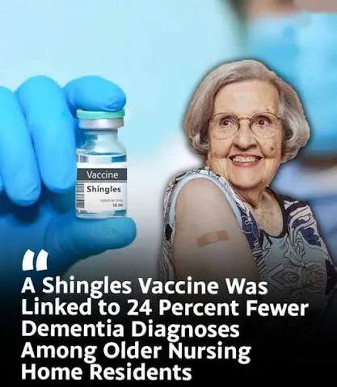
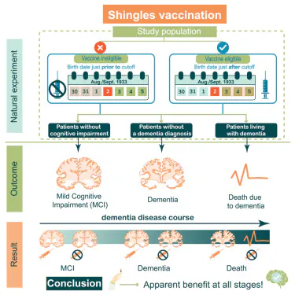

https://www.fmkorea.com/best/10415026175

2025년 4월 네이쳐 논문에서 영국 웨일스에 사는 노인들 상대로
대상포진 백신 맞은 군 대조해서 7년간 관찰한 결과
백신 맞은 군이 안맞은 군보다 치매 발생률이 최대 24% 감소함
또 2024년 네이처 논문은 대상포진 백신 맞은 사람과 아닌 사람 20만명을 조사했는데
치매 걸린 사람들 중 백신 여부에 따라 치매 진행도가 차이가 있다는 걸 발견함

왜 이렇게 작용하는지 대해서는 계속 연구중인데
수두-대상포진 바이러스가 신경에 계속 잠복해 있기 때문에 생기는 염증이
치매를 유발하는게 아닌가? 하는데 아직 완전히 밝혀지지 않았음
요약하자면
대상포진 백신을 맞으면 유의미하게 치매 예방 및 치매 경과를 늦추는 효과가 있음
생백신보다 사백신(싱그릭스)이 효과가 좀더 좋다는데 큰 차이가 있지는 않대
댓글
수집 당시 댓글 46개
어디에 · 1 시간 전
켄트지 · 1 시간 전
대상포진도 신경...질환이니까 얼추 말이 되는거같기도 하고 하여튼 희한하네
뒑뷁훍 · 1 시간 전
개추
저사실개드립가입했어요 · 1 시간 전
맞아서 나쁠게 없네
초고수 · 1 시간 전
오.......개추
대충살어좀 · 1 시간 전
백신을 맞는다. 라는 정상적인 사고를 할 수 있었냐 없었냐 차이같은데
· NoSugar · 1 시간 전
넌 일단 백신 맞아라 ㅋ
· 달빛헌터 · 53 분 전
차이가 좀 있긴할듯?
솔찍히 안아키같은거 믿는 능지면 치매이미 걸린거나 마찬가지 아니냐는 납쁜말은 ㄴㄴㄴ
· DEUSNONVULT · 53 분 전
백신접종이 권장사항이고 급여지원 대상자가 아니라면?
· 달빛헌터 · 52 분 전
권장사항이라도 20만명정도면 백신 무용론자가 포함되긴할듯
비율은 모르겠다
· DEUSNONVULT · 40 분 전
뭐 혹시나 포함이야 될수도 있겠지 대상설문조사할때 거르지않은 이상
근데 전체를 단순히 능지차이로 싸잡으면 안된단 말임
· 검색하거싶어 · 43 분 전
나도 걍 백신 맞는다는것 자체가 커보이는데
서양사람들이 아니라 미국인들이 멍청한건가?
히나땅 · 1 시간 전
백신을 통해 면역계 강화를 하면 신경절에 있는 헤르페스한테 기회감염을 안주니까 효과가 있는듯 특히나 두부 헤르페스는 더더욱이 3차신경절 통해서 뇌로 바로 직통이다 보니...
Doro · 1 시간 전
1방에 24프로니까 5방 맞으면 무적이잖아!!
· 매비니기 · 1 시간 전
120프로 똑똑해진다구?
· 년째파오후 · 49 분 전
으이구 곱연산이지 24의 5승임
· 노들나루 · 1 시간 전
· Jabberwocky · 59 분 전
이야 노벨상 타겠다 야
· 하나코나나 · 59 분 전
· 입맛다시는청년 · 51 분 전
아라그니아 · 1 시간 전
반대로 글루코사민 먹으면 악화된다더라
졸려요 · 1 시간 전
대상포진 백신이 종류가 현재 2개던데 뭐맞으야함? 사백신생백신 있던데
그리고 생백신 개비쌈
2방 맞아야하는데 방당 20 이던데?
· lIIllIIIl · 55 분 전
사백신이 더 비쌈
효과 더 좋고 지속기간도 긺
· 자기합리화 · 55 분 전
ㅇㄷ
나도 나중에 알려줘
· dagdha · 48 분 전
난 병원에서 50만원 달라 하던데...
백신 맞으려고 적금 들어야 할 판...
듀플로 · 59 분 전
그냥 저 백신이 존나 비싸서 그런걸 맞을 여유가 되는 사람들이 치매 덜 걸리는거 아니냐
· 김치수류탄 · 43 분 전
대상포진은 수두백신 아님?
· 야근 · 3 분 전
아님 대상포진예방접종 맞으면 이틀은 앓아누움 개아프다
존나조음 · 58 분 전
따지지 말고 싱그릭스 맞으면 됨
민감보습장벽크림 · 57 분 전
주관적인요정 · 53 분 전
신기하다
단백질의 세계는 신기해
일단누워 · 52 분 전
시발 후유증 가끔 올라와서 힘든데 백신 가격이 생각보다 비싼데다가 후유증 이후 6개월이라 타이밍도 잘 안맞음 ㅠㅠ
제라타 · 51 분 전
쟤들이 취소 되야 될텐데
포츈아그렇구나 · 50 분 전
저번달에 맞았는데 시발 맞은 왼팔이 일주일 내내 뻐근하고 힘이 안들어가지더라
몸살기운과 열까지 올라서 뭐지 부작용 씨게 터지는건가 싶었는데
지금은 그냥 익숙해진건지 아님 증상이 다 가신건지 다행히 정상 생활중
코로나 백신보다 쎄서 놀람..
· 아아우오유웅 · 25 분 전
코로나백신은 더 쌔야할거라는 생각은 왜하는거야 ?
정말궁금해서그럼 어떤 사고방식에서나온건지
· 포츈아그렇구나 · 23 분 전
? 그냥 내가 맞았던 백신 중 증상이 코로나 백신이 제일 쎄서 그렇게 말했을 뿐인데 뭐가 문제임?
· 야근 · 2 분 전
나도 맞은 백신중에 대상포진이 제일 아팠다 ㅋㅋㅋ 심지어 2회차가 더아픔
群靈術師 · 49 분 전
말은 되는 것 같은데?
스펙트럼 · 42 분 전
백신을 맞을수있는 환경에서 사는사람 이라는 점일수도?
RaeLilBlack · 39 분 전
맞는 나이에 상관없이 유효한가
시영이 · 29 분 전
대상포진 예방 접종 하자고 같이 날잡아서 가야겠다 .
행운의편지 · 27 분 전
그럼 염증이 높은 사람은 치매에 잘걸리겠네
MrBlueSky · 20 분 전
난 이미 한번 걸렸는데 좆됐네
· 히나땅 · 6 분 전
인류의 대부분이 보균자고 이미 걸렸고 지금은 괜찮다면 면역력을 증대하는게 가장 좋음 신경통이 아직 남아있다면 통증의학과에서 도움받고
· MrBlueSky · 1 분 전
운이 좋아서 극초기에 발견해서 문제없이 나았음
· 야근 · 1 분 전
이미 걸린적있어도 백신맞는게 좋다하더라